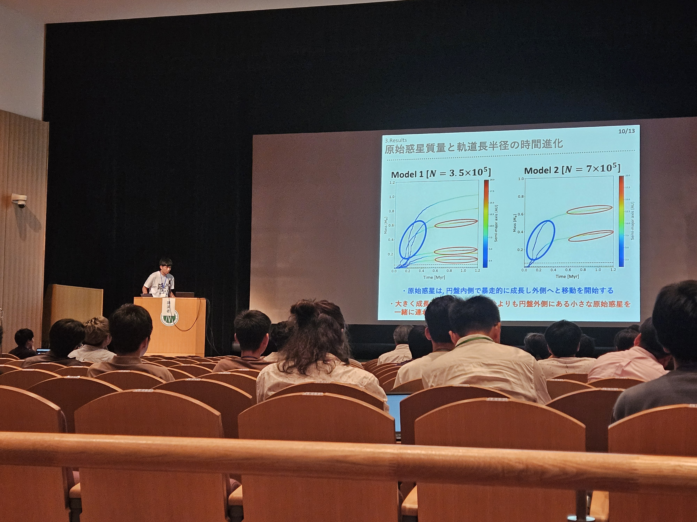

About
神野 天里 Tenri Jinno
神戸大学大学院理学研究科惑星学専攻 博士課程2年
Ph.D. Student, Department of Planetology, Graduate School of Science, Kobe University
Research
研究概要
惑星系の多様性と形成起源を、大規模数値シミュレーションを用いて探求しています。 スーパーコンピュータ「富岳」を活用した大規模並列N体シミュレーションにより、 微惑星から惑星への形成過程を詳細に調べています。
研究分野
- 自然科学一般／宇宙惑星科学／惑星形成
- 情報通信／高性能計算／並列計算
キーワード

学会発表の様子
シミュレーション結果 (2024年論文)
Publications
査読付き論文 / Refereed Papers
-
"Global N-body simulation of planetary formation: The origins of Ice giants"
(2025)
-
"Self-consistent N-body simulation of planetesimal-driven migration. I. The trajectories of single planets in the uniform background"
Publications of the Astronomical Society of Japan (2024)
-
"N-body simulation of planetary formation through pebble accretion in a radially structured protoplanetary disk"
Publications of the Astronomical Society of Japan 75(5) 951-969 (2023)
Awards & Projects
受賞歴 / Awards
- 2024年9月 日本惑星科学会2024年度最優秀発表賞
- 2023年8月 第53回天文・天体物理若手夏の学校 オーラルアワード
研究プロジェクト / Research Projects
- 2024年4月〜2027年3月 大規模数値シミュレーションと統計・数理モデリングで探る惑星系の多様性とその起源 JST次世代研究者挑戦的研究プログラム
- 2025年4月〜2026年3月 惑星移動を考慮した統一的な大規模惑星形成シミュレーション 「富岳」若手課題
- 2024年4月〜2025年3月 惑星形成過程におけるplanetesimal-driven migrationの効果の大規模N体計算 「富岳」若手課題
- 2023年4月〜2026年3月 「富岳」成果創出加速プログラム「シミュレーションとAIの融合で解明する宇宙の構造と進化」 AICS
Presentations
国際学会 / International Conferences
- 2025/12 "The effect of planetesimal-driven migration on planet formation" International Conference on Exoplanets and Planet Formation 2025, Shanghai, China 口頭発表
- 2025/9 "Global N-body simulation of planetary formation: The origins of ice giants" EPSC-DPS Joint Meeting 2025, Helsinki, Finland 口頭発表
- 2025/4 "Global N-body Simulation of Planetary Formation: The Origins of Ice Giants" International STEAM Symposium for Young Researchers 2025 招待講演
- 2024/7 "Global N-body simulation of planet formation: Effects of planetesimal-driven migration" International HPC Summer School 2024 口頭発表
- 2023/8 "N-body simulation of planetary formation through pebble accretion" 34th IUPAP Conference on Computational Physics 口頭発表
国内学会 / Domestic Conferences
- 2025/10 「大規模惑星形成N体計算：惑星移動の効果」 第12回「富岳」HPCI成果報告会 口頭発表
- 2025/5 「微惑星円盤からの統一的な惑星形成N体シミュレーション」 日本地球惑星科学連合2025年大会 口頭発表
- 2025/3 「微惑星円盤からの惑星形成過程におけるplanetesimal-driven migrationの効果」 日本天文学会2025年春季年会 口頭発表
- 2025/3 「大規模惑星形成N体シミュレーション」 惑星形成討論会2025 口頭発表
- 2024/9 「大規模N体シミュレーションで探る氷惑星の起源」 日本惑星科学会2024年秋季講演会 口頭発表
- 2024/7 「大規模N体シミュレーション：微惑星散乱による惑星移動の効果」 第54回天文・天体物理若手夏の学校 口頭発表
- 2024/5 「大規模惑星系N体シミュレーション」 日本地球惑星科学連合2024年大会 口頭発表
- 2024/3 「大規模N体計算によるplanetesimal-driven migrationの効果検証」 日本天文学会2024年春季年会 口頭発表
- 2024/3 「自己無撞着な大規模N体シミュレーションによる検証」 第3回「富岳」成果創出加速プログラム研究交流会 口頭発表
- 2023/9 「衝突破壊とペブル集積を考慮した惑星形成N体シミュレーション」 日本天文学会2023年秋季年会 口頭発表
- 2023/8 「ペブル集積と衝突破壊を考慮した惑星形成N体シミュレーション」 第53回天文・天体物理若手夏の学校 口頭発表
- 2023/5 「原始惑星系円盤におけるペブル集積を考慮したシミュレーション」 日本地球惑星科学連合2023年大会 口頭発表
- 2023/3 「ペブル集積を考慮した惑星系形成N体シミュレーション」 日本天文学会2023年春季年会 口頭発表
Career
学歴 / Education
- 2024年4月〜現在 神戸大学大学院理学研究科惑星学専攻 博士課程
- 2024年3月 神戸大学大学院理学研究科惑星学専攻 修士課程修了（修士・理学）
- 2022年3月 神戸大学理学部惑星学科 卒業（学士・理学）
- 2016年 Glebe Collegiate Institute 卒業（カナダ・オンタリオ州）
所属学会 / Academic Societies
- 日本惑星科学会（2024年8月〜）
- 日本地球惑星科学連合（2023年1月〜）
- 日本天文学会（2022年9月〜）
資格 / Qualifications
- TOEIC: 980点
- International HPC Summer School 2024 修了証
- 第四級アマチュア無線技士
Contact
223s415s(at)gsuite.kobe-u.ac.jp
Office
自然科学総合研究棟3号館 306号室
神戸大学大学院理学研究科惑星学専攻